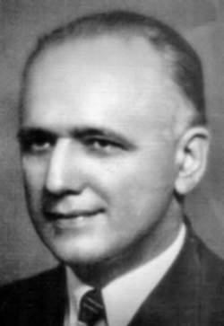

Kerim Erim
İstanbul Yüksek Mühendis mektebi'ni bitirdikten (1914) sonra Berlin Üniversitesi'nde Albert Einstein'in yanında doktorasını yaptı (1919). Türkiye'ye dönünce, bitirdiği okulda öğretim ü-yesi olarak çalışmaya başladı. Üniversite reformunu hazırlayan kurulda yer aldı. Yeni kurulan İstanbul Üniversitesi Fen Fakültesi'nde analiz profesörü ve dekan olduğu gibi Yüksek Mühendis Mektebi'nde de ders vermeye devam etti. Yüksek Mühendis Mektebi İstanbul Teknik Üniversitesi'ne dönüştürülünce buradan ayrıldı ve yalnızca İstanbul Üniversitesi'nde çalış-maya devam etti. Daha sonra burada ordinaryüs profesör oldu. 1948 yılında Fen Fakültesi Dekanlığı'na getirildi.
1940 - 1952 yılları arasında İstanbul Üniversitesi Fen Fakültesi'ne bağlı Matematik Enstitüsü-'nün başkanlığını yaptı. Türkiye'de yüksek matematik öğretiminin yaygınlaşmasında ve çağ-daş matematiğin yerleşmesinde etkin rol oynadı. Mekaniğin matematik esaslara dayandırıl-masına da öncülük etti. Matematik ve fizik bilimlerinin felsefe ile olan ilişkileri üzerinde de çalışmalarda bulunan Erim'in Almanca ve Türkçe yapıtları bulunmaktadır. Bunlardan bazıları şunlardır:
Nazari Hesap (1931), Mihanik (1934), Diferansiyel ve İntegral Hesap (1945), Über die Traghe-its-formen eines modulsystems (Bir modül sisteminin süredurum biçimleri üstüne - 1928).
Kerim Erim'in Eserleri
- Nazari Hesap (1931)
- Mihanik (1934)
- Sümer Riyaziyesinin Esas ve Mahiyetine Ait Rapor (1937)
- Dış Alem Meselesi (Matematik Bakımından) (1940)
- Tanzimat ve Müspet İlimler: Riyaziye (1940)
- Matematik ve Realite (1942-1965)
- Analiz Dersleri
 Diferansiyel ve İntegral Hesap (1945)
Diferansiyel ve İntegral Hesap (1945)